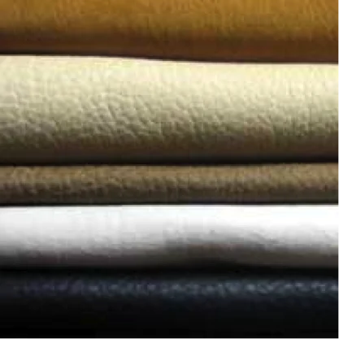

About Eco-Leather
Eco-leather is a new generation of synthetic leather made with bio-polyols derived from renewable resources like plant oils and corn-based polymers. It offers the look and feel of genuine leather while minimizing environmental impact.
Key Features
- Bio-Based: Made from 40–60% renewable sources for sustainable production.
- Low VOC Emissions: Complies with REACH and eco-standards.
- Soft & Breathable: Enhanced comfort for furniture and fashion use.
- Stylish Textures: Available in smooth, grain, or natural matte finishes.
- Odor-Free: No chemical smell, suitable for luxury-grade products.
Applications
- Vegan leather bags and shoes
- Office chairs and hotel furniture
- Car seat interiors and dashboards
- Eco-conscious fashion labels
- Premium notebooks and gift sets
Why Choose JontyMart Eco-Leather?
- Reliable sourcing with quality certifications
- Flexible MOQ and export-ready rolls
- Support for sustainable branding
- Australian-friendly shipping and compliance
- Competitive rates for eco-friendly markets
Care Instructions
Clean gently using a soft damp cloth. Do not bleach or use harsh cleaners. Store in dry, cool environments. Eco-leather is designed to last with minimal maintenance.